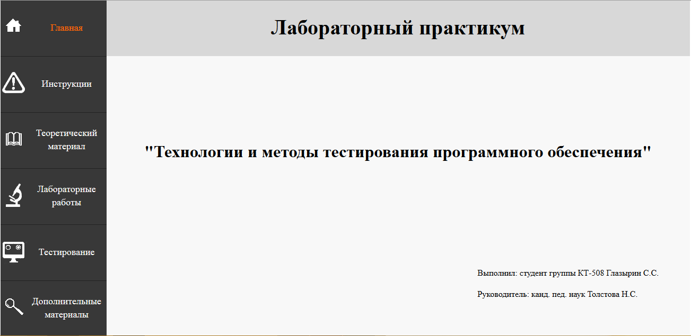
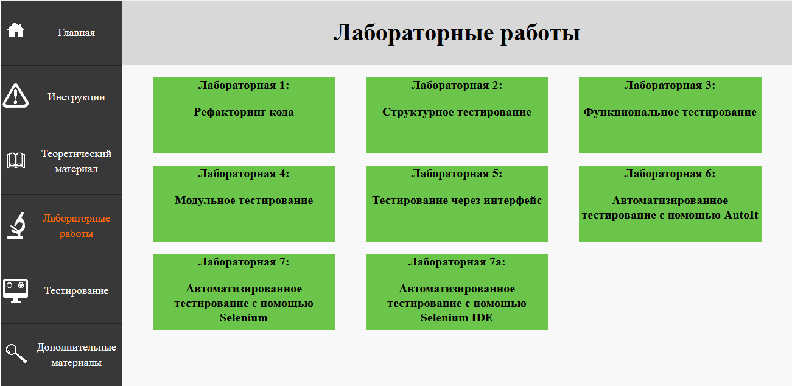
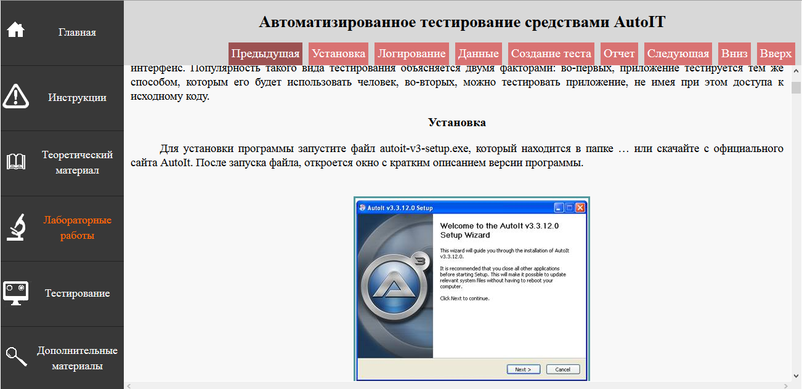
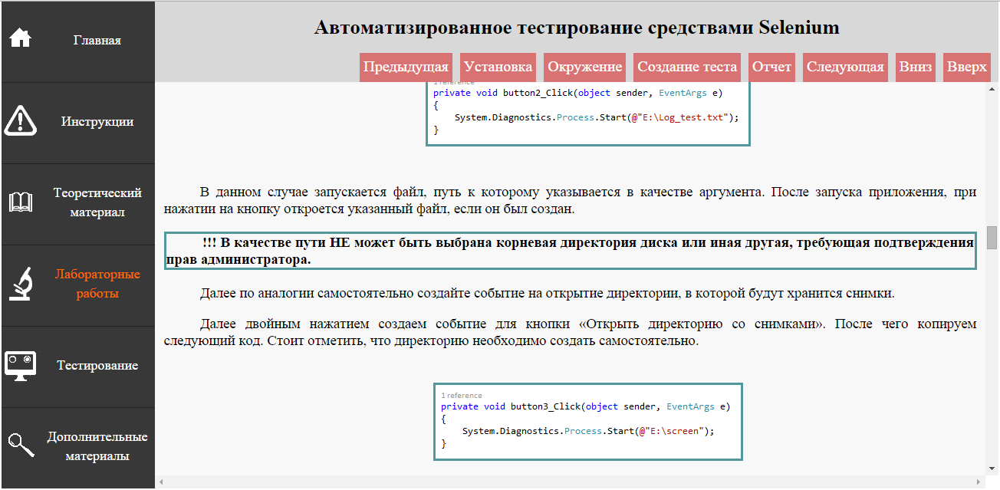
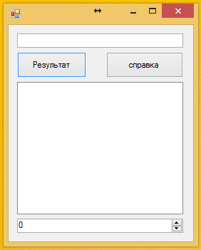

Рефакторинг
Методические рекомендации к лабораторному практику
Чтобы открыть лабораторный практикум необходимо двойным щелчком мыши запустить файл «index.html» находящийся в корневой директории продукта, в появившемся окне выбрать интересующий раздел или перейти в оглавление для выбора конкретной лабораторной работы (рисунок 1).

Рисунок 1 — Главная страница лабораторного практикума
Навигация осуществляется с помощью боковой панели навигации, расположенной в левой части интерфейса электронного лабораторного практикума. Лабораторный практикум имеет несколько разделов:
- Инструкции
- Теоретический материал
- Лабораторные работы
- Дополнительные материалы
При выборе одного из разделов в правой части экрана появляется содержание раздела, представленное ссылками на конкретные темы. На рисунке 2 продемонстрировано содержание раздела лабораторные работы электронного лабораторного практикума.

Рисунок 2 — Содержание раздела лабораторные работы лабораторного практикума
Темы теоретического материала имеют четкую последовательность изучения, которая соответствует их нумерации:
- тема 1 «Рефакторинг кода»;
- тема 2 «Структурное тестирование»;
- тема 3 «Функциональное тестирование»;
- тема 4 «Модульное тестирование»;
- тема 5 «Тестирование через интерфейс»;
- тема 6 «Автоматизированное тестирование».
Последовательность лабораторных работ является такой же, как и у теоретического материала. Для темы «Автоматизированное тестирование» были разработаны три лабораторные работы по изучению трех инструментов автоматизированного тестирования:
- AutoIt;
- Selenium;
- Selenium IDE Plugin для браузера Mozilla Firefox.
После выбора какой-либо темы, в правой части экрана открывается материал по выбранной теме. Пользователь может совершать перемещения внутри страниц с контентом, используя навигационную панель в верхней части экрана. А также имеется возможность перехода на следующую или предыдущую тему или лабораторную работу. Навигационные панели представлены на рисунке 3.

Рисунок 3 — Страница с материалом
В ходе выполнения лабораторных работ обучающийся работает по следующему принципу, в первую очередь необходимо прочитать задание, которое может иметь сопровождающее слово, поясняющее суть задания лабораторной работы. После чего обучающийся выполняет это задание. После выполнения некоторых лабораторных работ, обучающемуся предлагается скачать и заполнить отчет. Документ с бланком отчета находится внутри практикума. Ссылки для скачивания находятся в верхней навигационной панели, а также внутри материала лабораторной работы, в разделе «Контрольное задание».
На рисунке 4 представлены элементы, на которые обучающемуся необходимо обратить внимание. Данные элементы выделены полужирным шрифтом или помещены в рамку.

Рисунок 4 — Пример материала с повышенным акцентом внимания
В ходе выполнения лабораторных работ обучающемуся необходимо использовать учебные приложения, которые представлены в пятнадцати вариантах, представляющие небольшие приложения с графическим интерфейсом пользователя, а также наличием файлов с исходным кодом (рисунок 5).

Рисунок 5 — Пример приложения-тренажера
Вариант обучающегося определяется по двум последним цифрам зачетной книжки студента. Если последние цифры превышают пятнадцать, то из них вычитается пятнадцать до тех пор, пока не будет получено число соответствующее варианту.
Если у обучающегося возникают трудности при выполнении лабораторной работы, то имеется возможность изучить теоретический материал по данной теме. Обучающийся может изучить теоретический материал до начала выполнения лабораторной работы. В случае работы с инструментами автоматизированного тестирования имеется возможность получения справочного материала по работе с данными инструментами в разделе «Дополнительные материалы».
Достоинством данного программного продукта является наличие интуитивно понятного интерфейса, использования методического обеспечения и удобной навигационной панели.